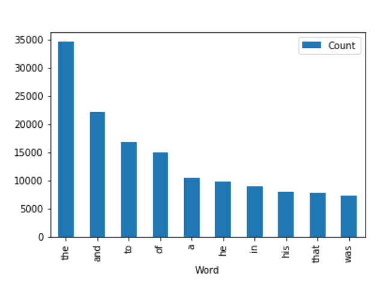

שלום,
ממש אשמח לעזרת הצוות, לא יודעת איך ולמה(בערך יודעת) אבל אחרי שהצלחתי לעשות את פיצוץ אוכלוסין במחברת 3. המחשב שלי התפוצץ.
כאשר אני מנסה לפתוח את המחברת היא פשוט לא ניפתח ממש אשמח לעזרה מה אפשר לעשות ?
תודה רבה על העזרה
לייק 1
5 לייקים
תודה רבה … פה זה פחות עזר לצערי …
אבל הסתדר
בעיה בהעלאת / הגשת מחברת 3 של שבוע 5
המחברת נטענת עד הסוף אבל לא באמת נשלחת (נראה כאילו לא הגשתי את התרגיל כשאני חוזרת למערכת הגשה התרגילים גם אחרי ריענון).
אולי זה קשור לגודל של המחברת? היא שוקלת 5,100 קילובייט (לעומת פחות מ- 100 קילובייט במחברות הקודמות שהגשתי).
אשמח לפתרון לבעיה
לייק 1
הפתרון הזה מאשכול השאלות הנפוצות הקטין משמעותית את גודל הקובץ ואז ההעלאה עבדה:
אם כל זה לא עובד, לחצו F12, עברו ללשונית Networks, נסו להעלות וצלמו את המסך איפה שיש אדום בחלון שנפתח.
צלמו גם את החלק במחברת בו כתוב # Upload, והעלו את המחברת.
מנסה להגיש תרגיל מלחמה והו
כיוון שעודדו ללמוד ולהשתמש בכלים חדשים, מצאתי איך אפשר לעשות היסטוגרמה של המילים השכיחות,
אבל משום מה הבודק האוטומטי לא אוהב את זה.
מה לעשות? לבקשתך מחקתי את הספריות כדי שלא יהיה העתקות וניסיתי להריץ במחברת אחרת. הקוד רץ, הכל טוב ויפה!
{kind=link}
לא יודעת אם זה קשור אבל על פניו הבאת משהו בשם אחד ואז קראת לו בשם אחר.
כדאי לנסות להריץ במחברת נקייה #המחברת זוכרת @orpazf
וגם לדעתי כדאי להוריד את התמונה כי זה חושף מודולים שכנראה עדיף לחפש לבד
3 לייקים
ניסיתי הכל. הסתרתי לבקשתך את המודולים
השורה עם האחוז היא לא שורה של פייתון, אלא שורה שאמורה להגיד משהו ל¯Jupyter notebook. אפשר למחוק אותה.
שימי לב שיתכן שעדיין תהיה שגיאה, כי מדובר במודול חיצוני (הוא לא מופיע ב¯docs.python.org) וטכנית עדיין לא למדנו על כאלו(:
ים, תודה רבה על המענה המהיר!
אם אני אמחוק את השורה, אז לא יהיה לי את ההיסטוגרמה המהממת הזו 
אפשר להשאיר (רשמתי הערה לבודקים)? או שהתרגיל לא ייבדק?

פשוט סמני את השורה ההיא בהערה
הסגל ידע להתמודד
לייק 1
תודה רבה! אתם 10!!
ואווו כבר בדקת! מדהים!
אבל מה אומרת ההערה, שלא עשיתי טוב? להגיש מחדש?
כי אני הבנתי שדווקא לחפש להשתמש בכלים שלא למדנו
{kind=link}
אסור להשתמש בספריות re ו-bs4
לייק 1
אפשר; פשוט ספציפית ביקשנו לא להשתמש בספריות חיצוניות
אופס… תודה רבה! להבא אשים לב 
אויש ראיתי רק עכשיו וגם אני השתמשתי בbs4
זה אומר שהתרגיל פסול?
החלטנו לרחם כי הבנו שזה לא היה מספיק ברור מהוראות ההגשה.
ממליץ בכל מקרה לפתור בלי, האימון הזה חשוב.
לייק 1
עכשיו כשהעלנו הילוך בשבועיים האחרונים - רוצה לציין שאני מחכה בקוצר רוח לאיזה הרצאה טובה על גנרטורים. אולי גם משולב בשליחת כמות לא ידועה של פרמטרים בפונקציה כקבלת ארגומנטים **, *. אולי איך לעבוד עם מודולים מהאינטרנט - איך לחפש נכון.
ההרצאות תמיד טובות - בטוח שיהיה מוצלח ומעניין 

8 לייקים
וגם המלצה על מודולים שאנחנו כבר אמורים להכיר ולשלוט בהם בשלב זה של הקורס.
או מודולים שימושיים חשובים ידידותיים ומומלצים יותר מאחרים…
תודה רבה
לייק 1